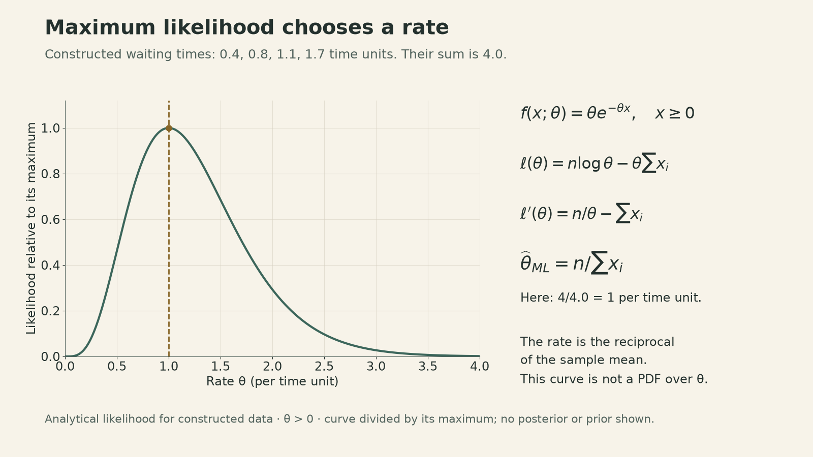
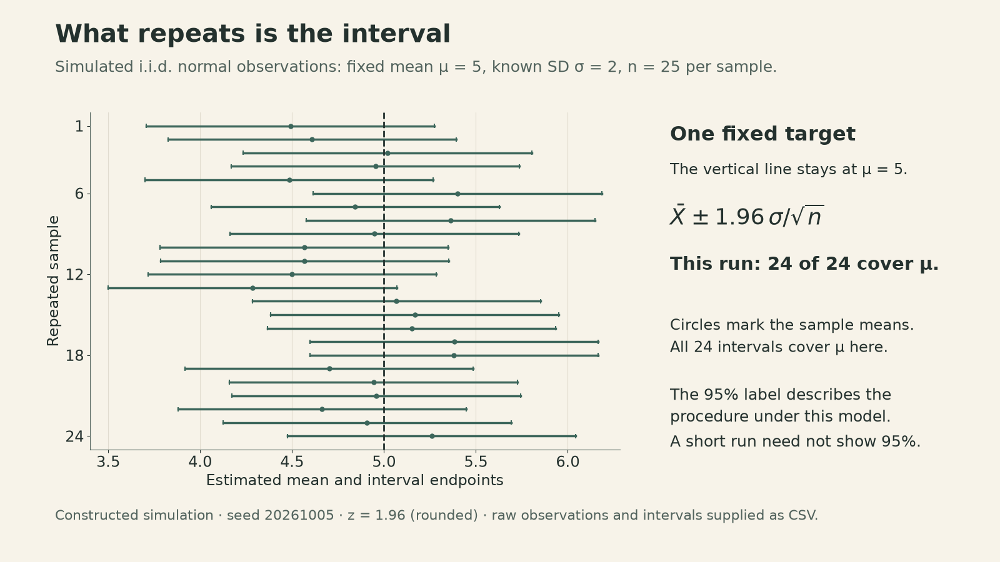
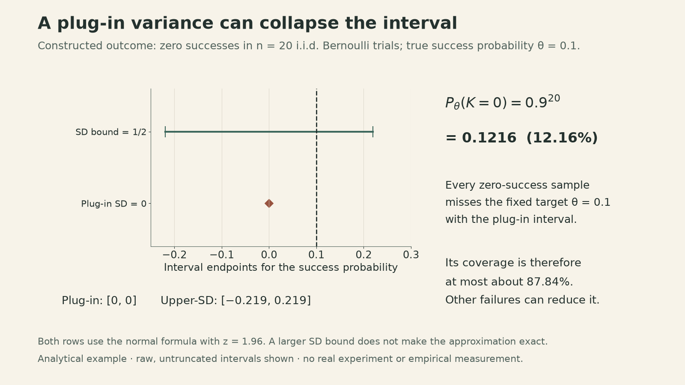

23. Classical Statistical Inference I
Fixed parameters, random estimates, and the coverage of a confidence interval
What repeats when we repeat an experiment: the unknown parameter, the estimate, or the interval around it?
In classical statistical inference, the parameter stays fixed. The measurements change, so the estimate and the interval change. A 95% confidence statement describes how that interval-building procedure behaves under repeated sampling.
John Tsitsiklis’s Lecture 23 develops this viewpoint through maximum likelihood, the sample mean, and confidence intervals. It connects two earlier ideas: the weak law explains why an estimate can approach its target, while the central limit theorem supplies an approximate scale for its error.
A fixed parameter still produces a random estimate
The Bayesian framework in Lecture 22 assigns a distribution to an unknown quantity and updates it after observing data. Classical inference instead starts with a family of sampling models, one for each possible fixed parameter value.
For discrete observations, write the model as \(p_X(x;\theta)\); for continuous observations, use a density \(f_X(x;\theta)\). The semicolon emphasizes that \(\theta\) selects a model. No prior distribution for \(\theta\) is supplied here.
An estimator \(\widehat\Theta=g(X_1,\ldots,X_n)\) is random because its inputs are random. After obtaining specific measurements \(x_1,\ldots,x_n\), the reported estimate \(\widehat\theta=g(x_1,\ldots,x_n)\) is a number. Expectations and probabilities such as \(\mathbb E_\theta\) and \(P_\theta\) refer to repeated data generated under that particular fixed \(\theta\).
The lecture distinguishes estimation from hypothesis testing. Testing can compare two specified models, such as a coin probability of \(1/2\) versus \(3/4\), or a single null model against many alternatives. This lecture concentrates on estimation; the subsequent lectures develop testing.
Maximum likelihood chooses the model that best supports the data
Given observations \(x=(x_1,\ldots,x_n)\), maximum likelihood selects
\[ \widehat\theta_{\mathrm{ML}} =\underset{\theta}{\operatorname{arg\,max}}\; L(\theta;x). \]
For continuous data, \(L\) is a joint density evaluated at the observations, rather than the probability of observing that exact vector. Viewed as a function of \(\theta\), it need not integrate to one and is not a posterior distribution.
The lecture’s example uses independent exponential waiting times with rate \(\theta>0\):
\[ f(x;\theta)=\theta e^{-\theta x},\qquad x\geq0. \]
For \(n\) observations with positive sum, the likelihood and log-likelihood are
\[ \begin{aligned} L(\theta;x)&=\theta^n e^{-\theta\sum_i x_i},\\ \ell(\theta)&=n\log\theta-\theta\sum_i x_i. \end{aligned} \]
Taking a logarithm preserves the maximizer. Differentiating gives \(\ell'(\theta)=n/\theta-\sum_i x_i\) and \(\ell''(\theta)=-n/\theta^2<0\), so
\[ \widehat\theta_{\mathrm{ML}} =\frac{n}{\sum_i x_i}=\frac1{\bar x}. \]
For the constructed waiting times \(0.4,0.8,1.1,1.7\) time units, the sum is \(4\) and the estimated rate is \(1\) per time unit. The parameter is a rate: the exponential mean is \(1/\theta\).

Bayesian MAP estimation maximizes likelihood times prior density. A prior that is constant on the relevant feasible parameter region gives the same maximizer there. That algebraic connection does not make a uniform distribution over the whole positive half-line a proper prior.
A maximizer still needs a sampling-quality check
Finding the largest likelihood answers an optimization question. The resulting estimator’s error must be studied across repeated samples.
Three useful properties are:
- Unbiasedness: \(\mathbb E_\theta[\widehat\Theta_n]=\theta\) for every allowed \(\theta\), when the expectation exists.
- Consistency: \(\widehat\Theta_n\xrightarrow{P_\theta}\theta\) as the sample size increases.
- Mean squared error: assuming a finite second moment,
\[ \begin{aligned} \mathbb E_\theta[(\widehat\Theta_n-\theta)^2] &=\operatorname{Var}_\theta(\widehat\Theta_n)\\ &\quad+(\mathbb E_\theta[\widehat\Theta_n]-\theta)^2. \end{aligned} \]
The exponential example makes the distinction concrete. With one observation, the estimator is \(1/X_1\). Its expectation diverges:
\[ \mathbb E_\theta[1/X_1] =\int_0^\infty\frac{\theta e^{-\theta x}}{x}\,dx =\infty. \]
The density remains positive near zero, where the reciprocal becomes too large to have a finite expectation. This is stronger than an ordinary finite upward bias: an expectation-based quality criterion is not finite in this case.
Nevertheless, for independent exponential samples, \(\bar X_n\xrightarrow{P_\theta}1/\theta\). Because that limit is positive and taking a reciprocal is continuous there, \(1/\bar X_n\xrightarrow{P_\theta}\theta\). This estimator is consistent even though its one-sample expectation diverges. More broadly, maximum likelihood requires model-specific conditions; a maximizer alone supplies no universal error guarantee.
Averaging connects accuracy to sample size
Use \(\mu\) for an unknown mean, to distinguish it from the exponential rate above. Suppose \(X_1,\ldots,X_n\) are i.i.d., with mean \(\mu\) and finite variance \(\sigma^2\). The sample mean has
\[ \begin{aligned} \mathbb E_\mu[\bar X_n]&=\mu,\\ \operatorname{Var}_\mu(\bar X_n)&=\frac{\sigma^2}{n},\\ \mathbb E_\mu[(\bar X_n-\mu)^2]&=\frac{\sigma^2}{n}. \end{aligned} \]
Linearity of expectation gives unbiasedness. Independence makes the variances add, and the weak law gives consistency. The standard deviation of the estimator—the standard error—is \(\sigma/\sqrt n\). It measures uncertainty in the mean estimate, while \(\sigma\) measures the spread of individual observations.
For i.i.d. normal observations with known variance, the sample mean also maximizes likelihood over the mean. This equality depends on the model. In particular, the exponential rate example estimates a different quantity using the reciprocal of the sample mean.
Coverage belongs to the interval-building procedure
Let \(I(X)=[L(X),U(X)]\) be an interval constructed from the data. The desired \(1-\alpha\) coverage condition is
\[ P_\mu\{L(X)\leq\mu\leq U(X)\}\geq1-\alpha \]
for every allowed mean \(\mu\). The endpoints are random before collecting the data. Once a particular interval \([l,u]\) has been reported, its endpoints and the fixed \(\mu\) are numbers. The interval contains \(\mu\) or it does not. The coverage condition has not assigned a posterior probability to \(\mu\) inside that realized interval.
For known \(\sigma>0\), the central limit theorem gives
\[ \frac{\bar X_n-\mu}{\sigma/\sqrt n} \;\approx\;N(0,1). \]
Let \(z_{1-\alpha/2}\) be the standard normal quantile. The central event can be rearranged to produce
\[ \begin{aligned} I(X) &=\left[\bar X_n-z_{1-\alpha/2}\frac{\sigma}{\sqrt n},\right.\\ &\qquad\left.\bar X_n+z_{1-\alpha/2}\frac{\sigma}{\sqrt n}\right]. \end{aligned} \]
For 95% nominal coverage, \(z_{0.975}\approx1.96\). Under general i.i.d. finite-variance sampling, this normal interval is an approximation; a fixed sample size does not guarantee its advertised coverage for every distribution. Under exactly normal sampling with known variance, the standardized mean is exactly normal, and using the exact quantile gives exact 95% coverage.

In this constructed simulation, \(\mu=5\), \(\sigma=2\), and \(n=25\), so the standard error is \(0.4\) and the half-width is \(0.784\). All 24 intervals happen to cover the target. A finite batch need not realize exactly its nominal percentage; the probability concerns the sampling procedure, not a required count in every batch.
At a fixed confidence level, interval width scales with \(1/\sqrt n\). Halving the width requires four times as many i.i.d. observations when the population variance is unchanged. Increasing the confidence level instead increases the normal quantile and widens the interval.
Estimating the variance adds another approximation
The lecture gives three approaches when \(\sigma\) is unknown:
- Use an upper bound. For Bernoulli observations, \(\sigma^2=\theta(1-\theta)\leq1/4\), so \(\sigma\leq1/2\). Substituting \(1/2\) makes the normal-formula interval wider than using the true standard deviation. It does not remove the normal-approximation error.
- Use the model’s variance formula. For Bernoulli observations with sample proportion \(\widehat\theta\), substitute \(\widehat\sigma=\sqrt{\widehat\theta(1-\widehat\theta)}\).
- Estimate variance from the sample. For \(n\geq2\), use
\[ S_n^2=\frac1{n-1}\sum_{i=1}^n(X_i-\bar X_n)^2. \]
The denominator follows from
\[ \begin{aligned} \sum_i(X_i-\bar X_n)^2 &=\sum_i(X_i-\mu)^2\\ &\quad-n(\bar X_n-\mu)^2. \end{aligned} \]
Taking expectations gives \(n\sigma^2-n(\sigma^2/n)=(n-1)\sigma^2\), so \(\mathbb E[S_n^2]=\sigma^2\). Unbiasedness applies to \(S_n^2\); it does not imply that \(S_n\) is unbiased for \(\sigma\).
Replacing \(\sigma\) by \(S_n\) in the normal interval gives a large-sample procedure. Under i.i.d. sampling with finite, positive variance, consistency of \(S_n\) justifies the replacement asymptotically. It does not make a small-sample normal interval exact. Exact Student-\(t\) intervals under normal sampling are a separate construction, excluded from this lecture’s assigned scope.
A directly calculable failure near the boundary
Consider a constructed model with \(n=20\) i.i.d. Bernoulli trials and true \(\theta=0.1\). If there are no successes, \(\widehat\theta=0\), the plug-in standard deviation is zero, and the interval \(\widehat\theta\pm1.96\widehat\sigma/\sqrt n\) becomes \([0,0]\). It misses the fixed parameter \(0.1\).
This event has probability
\[ P_{0.1}(K=0)=0.9^{20}\approx0.1216, \]
where \(K\) is the number of successes. These failures alone imply that this plug-in interval’s actual coverage at \(\theta=0.1\) is at most \(1-0.9^{20}\approx87.84\%\), below its nominal 95%. Other possible failures can reduce coverage further.

Intersecting a raw interval with the legal parameter range \([0,1]\) removes impossible parameter values. It does not repair the plug-in interval \([0,0]\) on the zero-success outcome.
This example makes the two approximations visible: using a normal approximation for the sample mean and substituting an estimate for the population spread. A narrow interval is informative only when its coverage argument remains credible under the sampling model.
The connection I take from the lecture is to keep the target, estimator, and guarantee explicit. Likelihood supplies a candidate estimate. Repeated-sampling properties describe its error. A confidence interval adds a coverage statement whose assumptions and approximation status belong beside the numerical result.